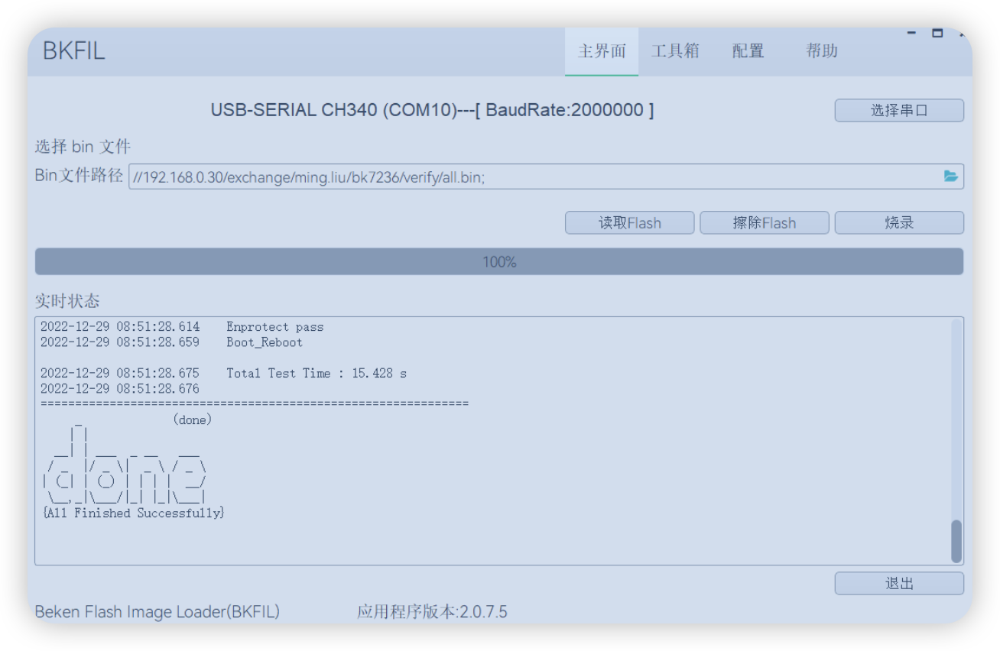

固件烧录（Burn Code）
使用 Armino + BKFIL 进行固件烧录的实用步骤说明。
概览
Armino 支持在 Windows/macOS 平台进行固件烧录。本页把关键文件与操作步骤整理成更容易执行的清单。
编译产物（.bin）
编译完成后，会在 build/app/bk7258/ 目录生成 all-app.bin，该文件可直接烧录。
安全项目首次烧录
需要先烧录 bootloader.bin，再烧录 all-app.bin。
通过串口烧录（UART）
备注
- 支持使用 Type C-Port 1 进行烧录。
- 建议使用 CH340 串口工具板 进行下载。
- 以 Windows 为例，目前支持 UART 烧录。

[此处有个图]
烧录工具（BKFIL）
工具包获取：
- Windows：BEKEN_BKFIL_V3.0.1.4_314_20240924.zip
- Mac：BKFIL_macos_v4.0.1_25091001.zip
BKFIL.exe 的界面与相关配置如下图所示：

[此处有个图]
操作步骤
- 用数据线将电脑连接到 Type C-Port 1。
- 在 BKFIL 中选择正确的 COM 端口 并连接硬件。
- 选择需要烧录的 .bin 文件路径（例如 all-app.bin）。
- 按住 R1 右侧的 Reset Switch Button，然后点击 Burn。
Physical AI Doc
本页基于 Physical AI Doc 内容整理，便于快速理解与执行。